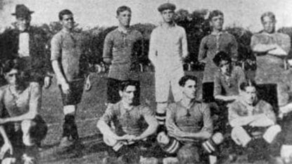

HISTORIA
1905-2022
El Club

Boca Juniors nació el 3 de abril de 190, participa de la Primera División de fútbol desde 1913 cuando jugó el torneo inicial. Desde entonces, disputó todas las temporadas en Primera División desde el comienzo del fútbol profesional en 1931. Se fundo en el Barrio de La Boca por adolescentes (Esteban Baglietto, Alfredo Scarpati, Santiago Sana, Tomás Movio, los hermanos Juan Antonio Farenga y José Teodoro Farenga, Luis De Harenne y otros), hijos de italianos y vecinos de La Boca, barrio de trabajadores inmigrantes y fuerte identidad genovesa. De ahi la palabra 'Xeneize'. La particularidad del caso fue que, sin saberlo, estaban creando el más grande de la Argentina. Uno que se volvería pasión de multitudes y también un gigante mundial. El lunes 3 de abril, luego de finalizadas las clases, los cinco adolescentes se reunieron en el sencillo hogar de Baglietto en Ministro Brin 1232 para concretar el proyecto,debido al alboroto que generaban los muchachos. Entonces los cinco cruzaron la calle para continuar la reunión en la Plaza Solís y ese mismo día, en uno de los bancos del parque, fundaron un club de fútbol que llegaría a ubicarse entre los más prestigiosos del mundo. A continuación acordaron que Esteban Baglietto, un menor de edad, sería el primer presidente. Pero por esa misma razón recapacitaron luego, y pocos días después tomaron la decisión de nombrar presidente a Luis Cerezo. Y el 21 de abril de 1905, en el campo de juego de Independencia Sud, goleó 4-0 a Mariano Moreno en el primer partido de la historia. Un presagio de los tiempos por venir.
Los Colores

Boca ya tenía nombre, un terreno donde jugar, un puñado de inmigrante italianos que empujaban con pasión, pero le faltaba un color que lo identificara. La indumentaria, por ese entonces, se resolvía como se podía y así fue como para los primeros partidos la hermana de los Farenga, Manuela, les cosió unos listones negros a una remeras blancas para que pudieran tener un juego de camisetas. La única condición era que no fueran rojas y blancas por... Alumni, el equipo inglés que dominaba la época. Boca también usó un modelo celeste, jugó durante algún tiempo con otro de finas rayitas azules hasta que adoptó definitivamente el azul y amarillo. En 1907 Boca abandonó la camiseta que había utilizado desde 1905. La tradición oficial relata que el Racing Club de Avellaneda poseía una casaca parecida y que, para resolver la cuestión, decidieron jugar la camiseta en un partido. Boca perdió y debió cambiar los colores. La elección de los colores definitivos del equipo fue dejada al azar. Juan Rafael Brichetto, presidente del club el año anterior (lo sería nuevamente en 1910-13), propuso adoptar los colores de la bandera del primer buque al que él le diera paso al día siguiente; Brichetto era operador de uno de los puentes del puerto. El barco resultó ser sueco y fue así que el club adoptó los colores azul y amarillo de la bandera sueca. Sin embargo no fue esa la camiseta definitiva, pues hasta 1913 Boca utilizó un diseño de fondo azul con una franja diagonal de izquierda a derecha. Ese año el club decidió un nuevo diseño, que con pocas diferencias sería mantenida en adelante: azul, con una amplia franja horizontal amarilla al medio.
El Debut en Primera y el Superclásico
El 13 de abril de 1913 quedó registrado en los libros como el debut de Boca en Primera, ante Estudiantil Porteño, en Ituzaingó, con una goleada por 4-1, y también llegó el primer superclásico del fútbol argentino. Boca y River compartían barrio, origen y una rivalidad que fue creciendo con los primeros años de competencia hasta convertirse en el clásico de clásicos de la Argentina y uno de los espectáculos más convocantes del fútbol mundial, especialmente si se juega en la Bombonera, recomendado por diarios y revistas del extranjero como un espectáculo imperdible al turista que anda de paso por la Argentina. El primer choque formal de esa rivalidad que sumaría muchos capítulos más fue en la cancha de Racing y quedó en manos de River, que ganó 2-1. Antes de ese partido se registran algunos enfrentamiento de carácter amistoso que empezaban a moldear un duelo que se volvió símbolo del fútbol argentino. El historiador Diego Estévez sostiene que el primer Boca-River fue un partido amistoso jugado el 2 de agosto de 1908, en el que Boca como local, venció 2:1; del mismo no se han encontrado pruebas documentales. El historiador Sergio Lodise sostiene que el primer Boca-River registrado en fuentes escritas se produjo en 1912. El sitio Informe Xeneize afirma, sin precisar la fecha que el primer superclásico finalizó con una empate 0:0 y una gran trifulca entre los simpatizantes. En el largo historial, hoy domina Boca con comodidad.